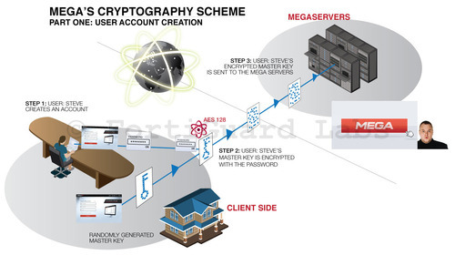

Cloud Services Can’t be Trusted: Client-side Crypto to The Rescue
Originally published at https://singularityhacker.com/cloud-services-cant-be-trusted-client-side

The era of trusting Google, Yahoo, Microsoft, whoever to keep your data and communications private is over. You just can’t trust the law, government, or cloud services to protect you. What you can trust is math. The only solution to true privacy in todays post patriot-act world is client-side cryptography. That is, your data and communication is encrypted on your machine in such a way that cloud services could not reveal your information even if they wanted to because you alone possess the key to its decryption. This not only protects users, it protects the companies that offer these services because they can truly say to government entities that they CAN’T hand over unencrypted user data.
This is, in fact, exactly what made it possible for Kim Dotcoms’ MegaUpload to be reborn as Mega. The encryption/decryption key is generated client-side ensuring that no one but yourself and people you wish to share with can view your files. Cloud services that wish to ensure their users privacy must employ similar methods because ‘trust’ just doesn’t cut it anymore. Security researcher Ruchna Nigam excellently describes the way Mega did this.
“All data present on the Mega servers is encrypted and so Mega never sees the content of your data. This can be easily verified since all encryption is done by open source, clear text client-side scripts. (DotCom was even confident enough of the strength of his encryption to announce a reward of 10,000 Euros to anyone who can break it) In short, the security of the data depends on the holder of the keys i.e. the user. This also works in their favour since they avoid copyright problems they had faced with Megaupload that led to it being taken down finally, but in the words Kim DotCom this is a small advantage compared to the freedom from surveillance they’re providing their users with.” - http://bit.ly/18FB9Zr

Mega is not the first to try this (check out securesha.re) but they have significantly advanced the cause by creating an SDK that lets developers build on their platform without having to worry about the client-side cryptographic complexities involved. Or, if you’re a real cowboy, dig right into crypto.js: A growing collection of standard and secure cryptographic algorithms implemented in JavaScript using best practices and patterns. See in detail how securesha.re works and a visual explanation of Megas’ methods.
The real point I want to drive home is this. Trust is gone. The services are snooping. The government is snooping. Your employer is snooping. If you’re a cloud service who wants users trust, there is one option: Client-side encryption. Get at it.